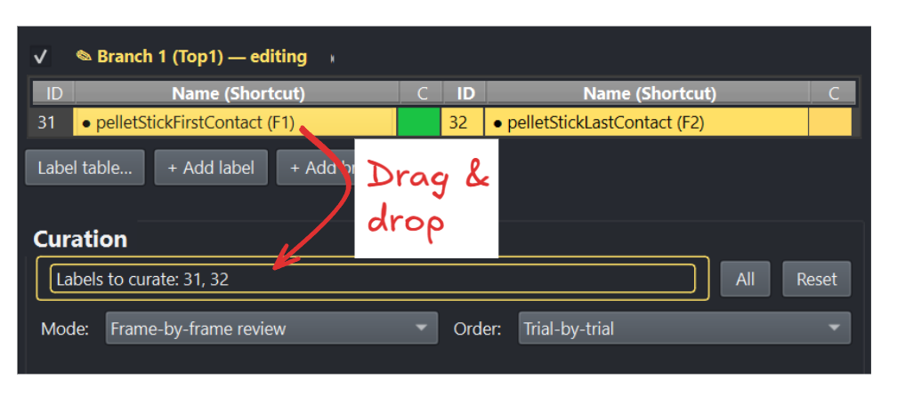

Ways to curate#
Two choices in the Curation section of the Labels tab decide everything else: the scope says which labels are up for review, and the mode says how a label gets curated. Every mode, both grids and every workflow step act on the scope and on nothing else.
Scope: which labels#
{kind=link}

Drag rows from the label tables into the Labels to curate box.#
Drag rows out of the label tables above into the drop area — a multi-selection drags as one — and their ids are listed there. Empty (or All) means every class; Reset empties the area so other labels can be dragged in. The scope is remembered per dataset.
The scope is the one place labels are chosen
Nothing else narrows what curation runs over: the grids list the scope on
their Setup tab but cannot change it, Ctrl+C curates the scope in the
current trial, and a workflow’s Set curation scope step fills this very
box. To review other classes, close the grid, drag other rows in, and open it
again.
Modes: how a label gets curated#
Manual (trial level) — the default. Placing, moving or deleting a label
makes it manual, as always. Press Ctrl+C (or use Tools ▸ Labels: Bulk editing…) and every
automated label in scope of the current trial becomes curated; manual labels
stay manual.
Curate… in Tools ▸ Labels: Bulk editing… does the same across the trials
and label classes you pick there. It asks first, because one click here says a human
approved labels nobody looked at, and curating cannot be undone — Ctrl+Z
takes back label edits, not curations. (Nothing reaches disk until you save,
so closing without saving still discards it.) Reach for it when a review left
some unjudged — a grid browsed without curating, a review stopped partway —
not as a way to skip looking.
Inspect is enough (trial level) — merely opening a trial curates its automated labels in scope. Use it when a model is good enough that looking at the trial is the review. The mode is per dataset, so it never follows you silently into another one.
Segment review#
For state events. The labels in scope become a queue of whole labels, walked
one at a time in the Order the combo says; each stop jumps to the label,
shows it with the Navigation section’s before/after padding around it, plays
it, and arms it for editing exactly as selecting it and pressing Ctrl+E
would. The label being reviewed is named in large coloured text, and
Shortcuts… spells out the keys. By default the queue holds only
automated labels — untick Show automated only to walk the rest:
Key |
Action |
|---|---|
click, click |
Re-place the label: the first click is its new start, the second its new end. The clicks snap to changepoints when the Changepoints tab’s correction is on, like any placed label. The label becomes manual ( |
|
Play the label again |
|
Next label. With Click N curates current ticked (the default) the label you leave becomes curated; a label left with only one click in keeps its old boundaries |
|
Back to the previous label |
|
The label should not exist — delete it and move on |
|
Play / pause |
Enter does nothing here: a label that plays right needs no key but N. The
mode needs no video — in an audio-only session the label’s sound plays. Just
watching, without curating, is the Navigation section’s Label mode;
segment review is that same walk with N, Backspace and the two-click edit
added, so it lives with the other curation modes and not in the Navigation
section.
Frame-by-frame review#
For point events, and for a boundary the label grid singled out. The labels in scope become a queue of boundaries (one per point event, a start then an end per state event, in time order) walked one at a time, each centred in a small View window (untick Locked around label to pan the whole trial). The label being reviewed is named in its class colour, with its labeling method and confidence beneath (and start or end for a state event); the keys are drawn in the section, and Shortcuts… spells them out. By default the queue holds only automated boundaries — a human already vouched for manual and curated ones — untick Show automated only to walk those too. The Order combo walks the queue Trial-by-trial (every boundary of a trial, then the next trial) or Label-by-label (one class across every trial, then the next class), and with Jump to next after Enter/Backspace ticked (the default) confirming or deleting moves straight on to the next boundary:
Key |
Action |
|---|---|
|
Step the video one frame |
|
Confirm: the frame on screen becomes the boundary. A boundary that moved makes the label manual ( |
|
The event should not exist — delete it (both boundaries of a state event) and move on |
|
Next boundary. With Click N curates current ticked (the default) the boundary you leave is curated |
|
Back to the previous boundary |
|
Play / pause |
Navigating trials the normal way (trial combo, Up/Down) pulls the review
along to that trial’s first boundary. Nothing reaches disk until you save with
Ctrl+S.
Reviewing what a LightGBM model [Ke et al., 2017] or the pixel model predicted, you also get the curve it predicted from: a dashed line per label class, in the class’s own colour, on a 0–1 right-hand axis. Only the classes in scope are drawn, so dragging in one class shows that class’s belief and nothing else. A low confidence then explains itself — a second peak elsewhere in the trial means the model was torn, a flat line means it never found anything. Labels placed by hand have no curve and none is drawn.
Seeds don’t have to be hand-placed. Because the queue is built from the labels
TSV, you can generate first-guess labels programmatically from a time-series
criterion — say, the first frame where beak opening exceeds a threshold
width — write them into the session’s labels.tsv with
labeling_method = automated (see the column reference), load it into the GUI, and walk the guesses here.
A rough automatic pass plus a fast frame-accurate review is often far quicker
than either alone.
Scope, mode and review window are settings you will set the same way every time you review the same behaviour; a workflow records them and replays them in one press.